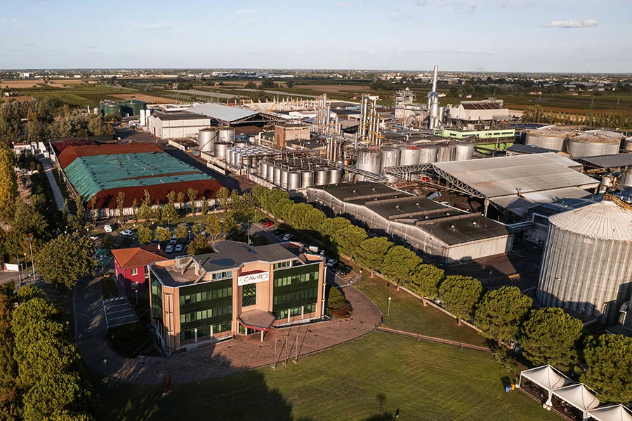

Caviro Extra: Materia e Bioenergia
La nostra visione è rivolta verso lo zero: zero scarti e zero emissioni. Nei nostri stabilimenti l'economia circolare prende vita trasformando gli scarti in risorse preziose.
Lavoriamo ogni giorno per valorizzare i residui di potatura e gli scarti della lavorazione dell'uva, trasformandoli in energia termica, energia elettrica e fertilizzanti naturali per il pianeta.
Il Nostro Ciclo Virtuoso
Interagisci con il menù per esplorare le 4 fasi del processo di rigenerazione.

1. La Vigna e i Viticoltori
Tutto inizia dai nostri 36.200 ettari di vigneti. Curiamo la terra con rispetto, raccogliendo l'uva dei nostri 11.500 viticoltori. I residui di potatura non vengono bruciati, ma raccolti per il recupero energetico.